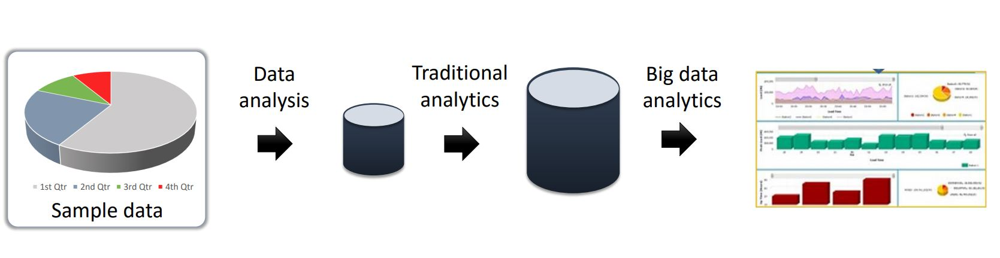

With big data, you use all your data instead of sample data for analysis. In traditional analysis, analysts take a representative sample of data from the available data and do their analysis to provide their conclusions. With big data technology, all the available data is used for analysis. You may find associations in data, predict future outcomes and provide prescriptive analysis. Prescriptive means you can say this will happen instead of this may happen. Using big data for analysis also means you make data-driven decisions instead of decisions based on intuitions. With data, you can support decisions which would otherwise be left to chance. Analysis using big data can help organizations increase their safety standards, reduce maintenance costs, and prevent failures. The image below depicts how with the help of traditional analytics, you copy sample data to a small database and run analysis on that. However, with big data analytics, you use all the available data without sampling.
